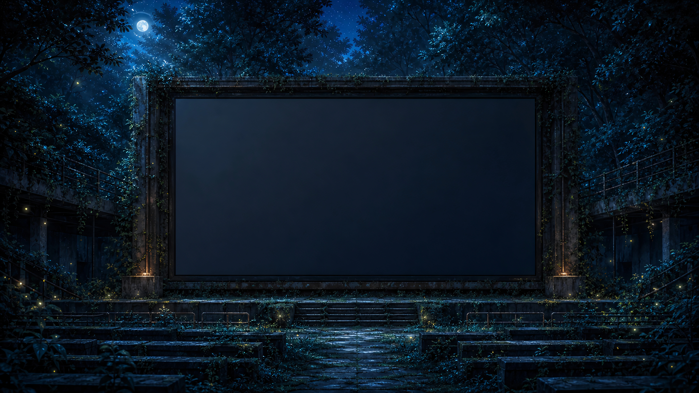

タグの星々をたどり、まだ知らない一曲と出会う旅。
まだ保存した曲はありません。 ♡ を押して旅の記録を残しましょう。
作曲家 秋山裕和による H/MIX GALLERY の音楽シアター入口です。タグの星々から曲を探す「星図の旅」、約60分のBGMフィルム「夜風」、短編映像「旅する少女」、演奏動画・制作実績など、フリーBGMを情景の中で旅するように楽しめます。各コンテンツの再生には JavaScript が必要です。
楽曲ライブラリ（全曲一覧）へ ／ 和風BGM一覧 ／ 星図の旅 ／ 夜風